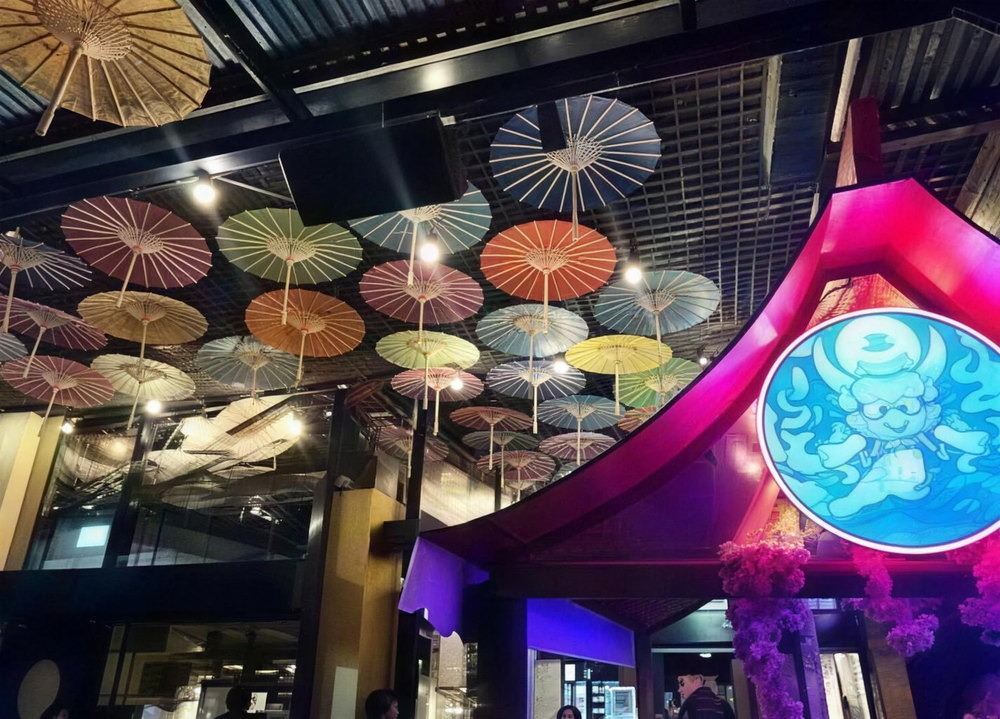
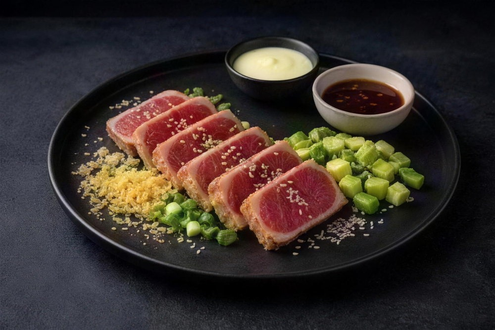
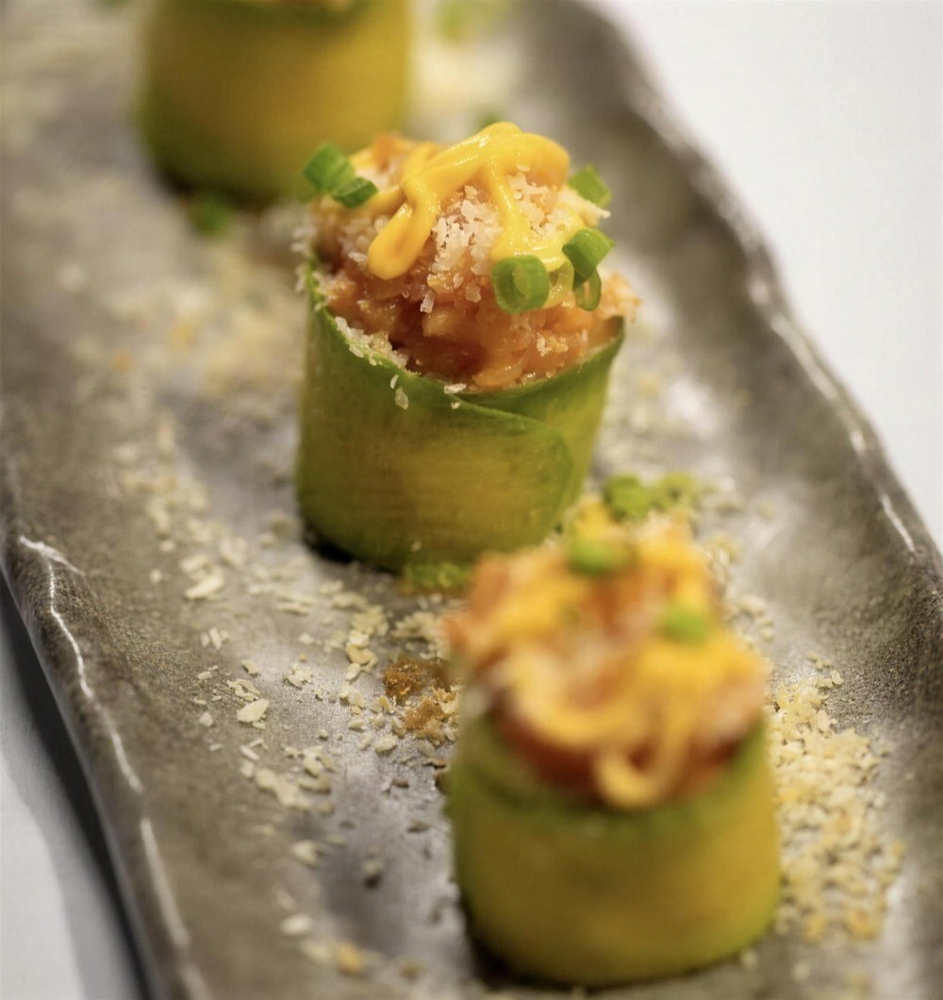
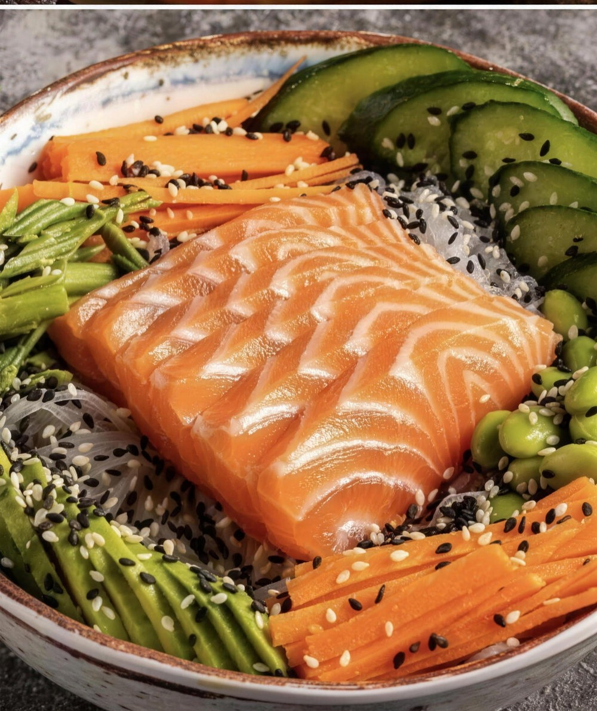
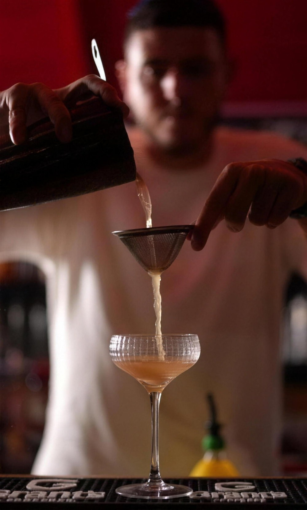
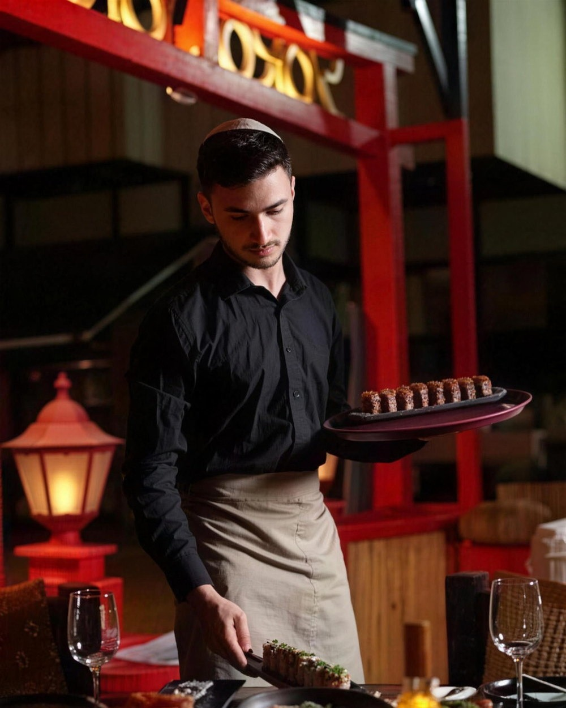
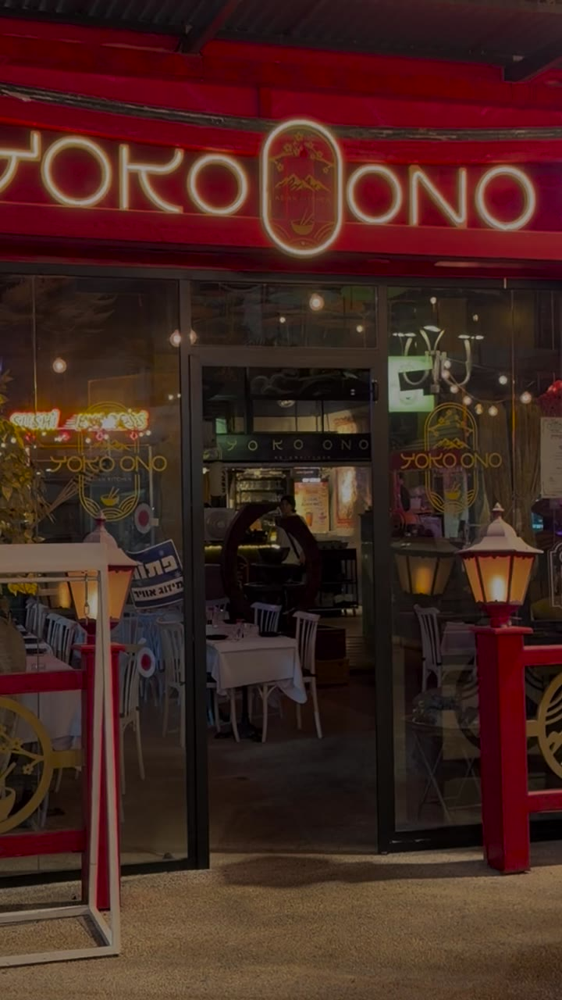

YOKO ONO · ASIAN KITCHEN · RA'ANANA
בואו ניכנס.
אחוזה 124, רעננה.
מטריות נייר מעל הראש.
שולחנות ערוכים, אור של פנסים.
סושי. מנות חמות. קוקטיילים.
כשר למהדרין.
YOKO ONO · ASIAN KITCHEN
מסע של טעמים. חוויה שלמה.
פיוז׳ן אסייתי, כשר למהדרין, בלב רעננה. מחכים לכם באחוזה 124.
THE EXPERIENCE
יותר מארוחה. חוויה אסייתית.
ביוקו אונו נפגשים המטבח היפני והאסייתי: סושי ורולים מוקפדים, מנות חמות, קוקטיילים ואווירה שעושה חשק להישאר. כשר למהדרין, בלב אחוזה.
- סושי ורולים
- מנות חמות
- קוקטיילים
- כשר למהדרין

THE FOOD
הטעמים שמחכים לכם.
סושי ורולים, ניגירי, דים סאם ומנות חמות. התפריט המלא, עם המחירים, מחכה ב־Wolt.



THE PLACE
המקום. הבר. הערב.
חדר אחד מתחת למטריות, חדר שני שקט יותר, ובר שמכין קוקטיילים עם עשן. באים לארוחה, נשארים לכוס.


יוקו אונו, גם אצלכם בבית.
בא לכם ליהנות מהטעמים שלנו בבית? ההזמנה למשלוח דרך Wolt, ולאיסוף עצמי מתקשרים.
רגעים מיוחדים, באווירה אחרת.
חוגגים משהו? ספרו לנו מה אתם מתכננים ונחזור אליכם.
FIND US
נתראה ביוקו אונו.
אחוזה 124, רעננה 077-938-6192אפשר גם עם מקש הרווח. בלי זה, השעות כאן בכל מקרה.
הפנסים דולקים. מחכים לכם.
שעות פעילות
- א׳–ה׳
- 12:00–23:00
- ו׳
- 11:30–14:30
- מוצ״ש
- 20:30–23:00
לפי מערכת ההזמנות. בחגים ובמועדים כדאי לוודא בטלפון.
הזמינו שולחן